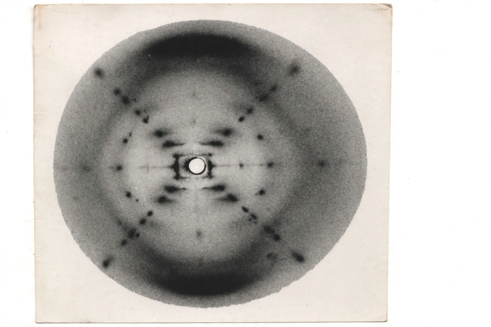

Photo 51
From Wikipedia, the free encyclopedia

Photo 51 is the nickname given to an X-ray diffraction image of DNA taken by Raymond Gosling in May 1952 under the supervision of Rosalind Franklin at King's College London. The photograph — the 51st taken by the pair — provided crucial evidence for DNA's helical structure: the X pattern of its spots revealed a helix, and their spacing gave its pitch and diameter. Shown by Maurice Wilkins to James Watson without Franklin's knowledge in January 1953, it galvanised the Cambridge model-building that produced the double helix.
The image and its reading
Franklin and Gosling's work on the B form of DNA (the hydrated, biologically relevant form) produced diffraction images of unmatched clarity. Franklin had measured the unit cell, established the phosphate groups' outside position, and was preparing publications when Watson saw Photo 51 and the King's MRC report data reached Crick — the two evidential streams behind the April 1953 Nature papers.
Credit and legacy
The story became science's emblematic case of credit and gender: Franklin, dead of ovarian cancer in 1958 (aged 37), was ineligible for the 1962 Nobel shared by Watson, Crick and Wilkins, and Watson's The Double Helix (1968) caricatured her as 'Rosy'. Historians (Sayre, Maddox) have reconstructed her central role; the photograph itself — held at King's — is now as famous as the structure it revealed.